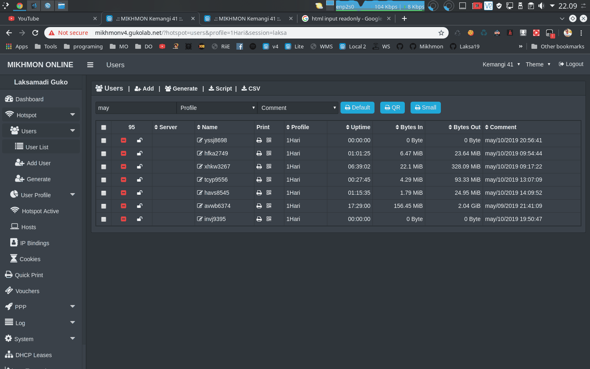
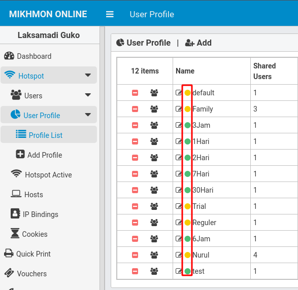
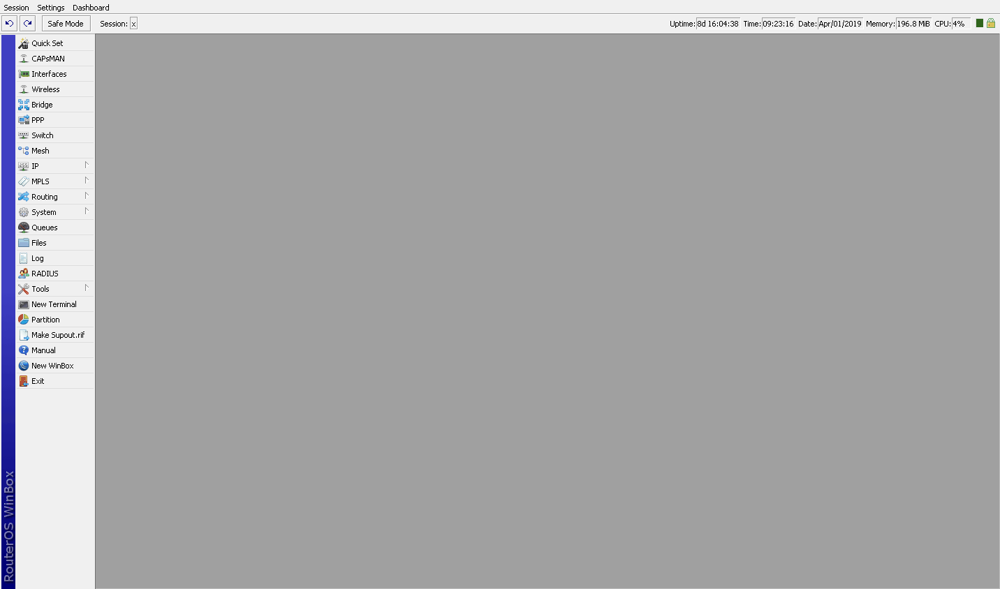

Changelog Mikhmon V3
MIKHMON V3
Download update.zip
Changelog
Update 07-14 2019 V3.16
- Penambahan address pool di add user profile dan edit user profile
- Notif new update di admin settings
Update 07-02 2019 V3.15
- Update RouterOS API for support v6.45.x
Update 05-09 2019 V3.14
- Perbaikan time zone untuk print / quick print.
-
Penambahan input comment setelah comment user berubah menjadi tanggal expired.

Update 04-06 2019 V3.13 r7
- Perbaikan add user profile (gagal membuat monitor profile di scheduler).
- Perbaikan edit profile (remove monitor profile untuk expired mode none).
-
Penambahan indikator monitor profile di laman list user profile dan edit user profile (Green = Monitor Profile aktif, Orange = Monitor Profile tidak aktif).

Update 04-02 2019 V3.13 r6
- Perbaikan penghitungan tanggal dan jam monitor user profile.
-
Perubahan global function ke local function.
Silakan diupdate kembali user profilenya. (buka user profile dari Mikhmon, simpan kembali masing-masing user profile).
Setelah update user profile hapus semua environment (system -> scripts -> environment).

Link Video Update Profile v3.13 r6
Update 03-31 2019 V3.13 r5
- Perbaikan user profile. (user expired dipergantian bulan). Silakan diupdate kembali user profilenya. https://github.com/laksa19/mikhmonv3/issues/5
Update 03-30 2019 V3.13 r4
- Perbaikan edit user.
- Penambahan nama profile di filter comment (user list).
- Penambahan hapus expired user (klik expired pada kolom comment user list).
- Perbaikan print laporan penjualan.
Update 03-27 2019 V3.13 r3
- Perbaikan edit profile.
- Perbaikan userlist (dobel comment di pilihan/filter user berdasarkan comment).
- Penambahan changelog di laman About.
Update 03-22 2019 V3.13 r2
- Perbaikan user profile, untuk data penjualan dobel (user 2 digit angka). Silakan diupdate kembali user profilenya.
Update 03-21 2019 V3.13 r1
- Perbaikan user profile, untuk data penjualan tidak muncul di Mikhmon. Silakan diupdate kembali user profilenya.
Update 03-20 2019 V3.13
- Perbaikan QR Code. Tidak lagi menggunakan Google chart API.
-
Perubahan variable QR Code menjadi tanpa tag
<img>.! Perlu penyesuaian untuk template hotspot, ubah
<img src="<?= $qrcode ?>" >menjadi<?= $qrcode ?>tanpa tag<img>. Bagi yang menggunakan template default bisa reset template default untuk menyesuaikan QR Code.Untuk template voucher yang lain bisa menyesuaikan ukuran QR Code dapat menambahkan style sebagai berikut.
<style>
.qrcode{
height:80px;
width:80px;
}
</style>

- Penghapusan Grace period.
- Pehapusan info start dan end user.
-
Perubahan mode expired.
Mode baru ini tidak lagi menggunakan scheduler per user. Sebagai gantinya informasi tanggal expired akan dipindahkan ke comment user setelah login. Silakan update user profile agar dapat menggunakan mode expired yang baru. Pengecekan expired user yang login sebelum user profile diupdate atau yang masih menggunakan mode expired versi 3.12, bisa melalui scheduler di Mikhmon.
! Untuk yang menggunakan expired mode dengan record jangan update user profile yang sudah ada, sampai user dengan profile tersebut sudah habis. Sebaiknya buat user profile baru dan generate user baru dengan user profile tersebut. Apa yang terjadi jika diupdate? Report penjualan akan menjadi bertambah untuk masing-user yang sudah login. Tapi kalau tidak ada masalah dengan data penjualan yang double, silakan update user profilenya.
! User yang login sebelum user profile diupdate akan tetap menggunakan sistem atau mode expired yang lama.
! Jangan hapus atau mengganti comment user jika sudah menggunakan format tanggal sebagai berikut :
mar/20/2019 16:05:11. - Cek status voucher tidak bisa untuk user yang masih menggunakan profile dengan mode expired versi 3.12.
Update 03-12 2019 V3.12 r1
- Perbaikan user profile. Meminimalisir user terhapus sesaat setelah login. !Silakan update user profile dari Mikhmon.
Update 03-08 2019 V3.12
- Perbaikan remove session.
- Penambahan print untuk report
- Penambahan filter berdasarkan comment dan range tanggal. (Mikhmon Online).
Update 02-14 2019 V3.11
- Perbaikan dashboard blank.
- Penggantian Print Bluetooth dengan Quick Printer
- Penambahan Quick Print. Panduan, https://youtu.be/KGAsHU0qOBA
Update 02-06 2019 V3.10
- Perbaikan delete logo.
- Penambahan pilihan bahasa.
- Dukungan untuk print voucher dari Android. Telah diuji untuk Zjiang Printer Thermal Bluetooth - ZJ-5802. Panduan, https://laksa19.github.io/printBT.html
Update 02-01 2019 V3.9 r3
- Perbaaikan cek empty session laman admin
- Perbaikan resume report, untuk menampilkan resume bulan sebelumnya.
Update 01-29 2019 V3.9 r2
- Perbaaikan load time laman dashboard.
- Perbaikan laman uploaad logo.
Update 01-29 2019 V3.9 r1
- Perbaikan template voucher editor.
- Penambahan short tabel.
- Perbaikan reset hotspot user.
Update 01-27-2019 V3.9
- Perbaikan CSS, penambahan tema Blue dan Green.
- Cek Koneksi sebelum masuk dashboard dan berganti session.
- Penambahan Indikator session Mikhmon yang aktif.
- Penambahan fitur Resume Report.
Update 01-22-2019 V3.8
- Perbaikan Theme.
- Traffic dashboard dengan Highchart.
- Penambahan fitur Traffic Monitor.
Update 01-17-2019 V3.7
- Penambahan Light Theme.
- Pennambahan menu penngganttian tema di navbar.
Update 12-21-2018 V3.6 r1
- Penambahan Live Report
Update 12-1-2018 V3.6
- Penambahan progrss bar.
- Enable price use decimal (.).
- Filter report by prefix.
- Export user to script.
- Export user to csv.
- Penggantian kolom print menjadi tombol dan penambahan pilihan comment di user list.
- Perubahan cara print voucher dari user list.
- Beautify template editor dan penambahan tombol view voucher.
Update 11-9-2018 V3.5
- Penambahan chart traffic. Sesuaikan Max Rx dan Tx di Settings.
- Penambahan pilihan filter di Report dan User Log.
Update 10-30-2018 V3.4
- Penambahan cek spasi di nama user profile.
- Penambahan user profile dan comment di Report. Yang perlu dilakukan adalah update user profile dari Mikhmon, buka user profile yang ingin diupdate kemudian klik Save.
- Penambahan filter berdasarkan server hotspot di Hotspot Active.
Update 10-24-2018 V3.3
- Perubahan struktur menu.
- Penambahan Hotspot Cookie dan System Scheduler.
- Perubahan Generate User. Menghilangkan huruf l,L,q,Q,o,O serta angka 1 dan 0.
- Perbaikan remove user.
Update 09-10-2018 V3.2
- Penambahan kolom Time Left di Hotspot Active.
- Penambahan Parent Queue di Add dan Edit User Profile (Bagaimana cara penggunaannya? silakan pelajari Simple Queue Mikrotik).
- Penyesuaian format Data Limit user menjadi Byte Binary (base 2).
- Reformat Uptime.